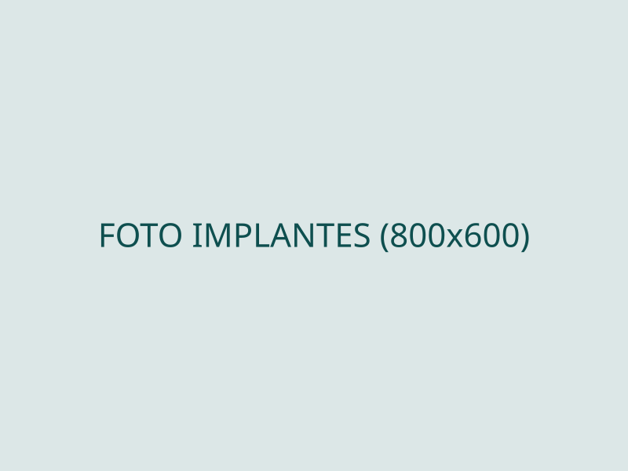

Implantes Dentários
Recupere dentes, mastigação e confiança. Planejamento 100% digital para cirurgias mais previsíveis, rápidas e confortáveis.
- Tomografia e planejamento guiado
- Do unitário ao protocolo completo
- Acompanhamento em todas as fases